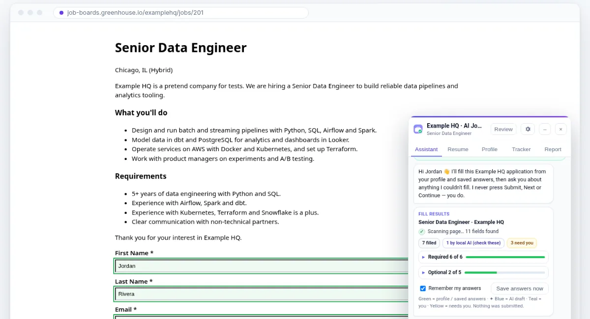

Fills the application for you
Name, contact details, links, work history, education, work authorization and your resume file. Live progress shows what’s required and what’s optional, and the panel asks you about anything it couldn’t fill.